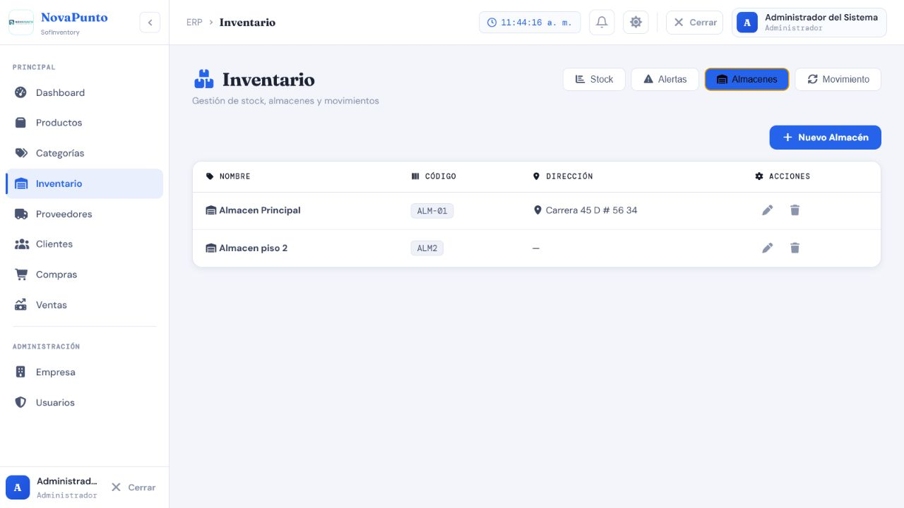
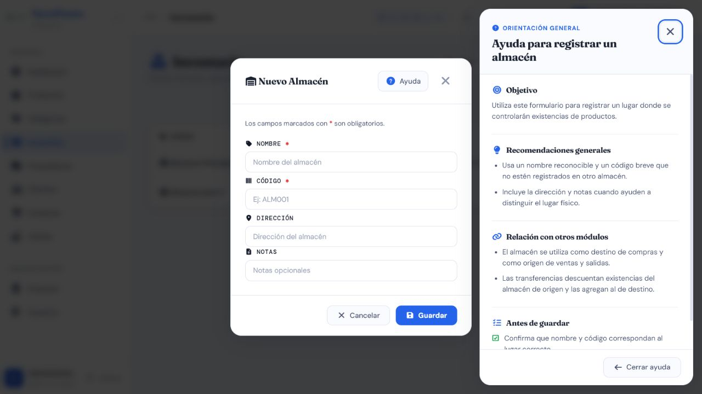

Casos de prueba — Almacenes
Prefijo: TC-ALM · Cobertura mínima: 5 casos · Ejecución final: 5 aprobados · Fecha: 8 de agosto de 2026
Alcance
Valida creación, edición, consulta y eliminación de los lugares físicos que concentran stock. Crear y editar admite Administrador, Supervisor y Bodega; eliminar admite Administrador y Supervisor. Listado y detalle requieren una sesión autenticada por la configuración general.
Matriz de casos
| ID | Nombre | Tipo | Funcionalidad que verifica | Precondiciones y rol | Datos ficticios | Resultado esperado | Automatización existente | Falta automatización | Evidencia | Prioridad |
|---|---|---|---|---|---|---|---|---|---|---|
| TC-ALM-001 | Crear almacén válido | Positivo | Alta con nombre, código y dirección/notas opcionales | Administrador, Supervisor o Bodega | Bodega Norte 2, código BN-02, dirección ficticia y notas opcionales |
HTTP 201; registro visible y sin stock implícito | P — backend/inventario/tests.py::FlujoInventarioTests::test_validacion_almacen_devuelve_campos_y_mensajes_en_espanol cubre requeridos; no alta positiva |
Sí: API completa y stock inicial | AUTO + API + DB-R + MAN; formulario y ayuda | Alta |
| TC-ALM-002 | Rechazar duplicados y campos semánticos inválidos | Negativo | Unicidad de nombre/código y validación de nombre | Almacén equivalente existente; rol autorizado | Nombre/código repetidos; nombre solo numérico | HTTP 400 con errores identificados por campo; no crea duplicado | A — métodos backend ejecutados y aprobados en SQLite/PostgreSQL |
Falta prueba Angular por variante visible | AUTO + API | Alta |
| TC-ALM-003 | Editar sin alterar existencias | Integración | Actualización de metadatos preserva stocks y movimientos | Almacén con stock e historial; Administrador, Supervisor o Bodega | Cambio válido de nombre, código, dirección o notas | HTTP 200; cantidades y movimientos permanecen intactos | M — no se localizó prueba automatizada |
Sí: edición y no regresión de inventario | AUTO + API + DB-R | Crítica |
| TC-ALM-004 | Proteger eliminación con stock o historial | Negativo / integración | Rechazo con stock positivo y conflicto con historial protegido | Almacén con stock y otro con historial; Administrador o Supervisor | Cantidad positiva y movimiento histórico ficticio | Con stock: 400; con historial protegido: 409; no se pierden datos | M — no se localizó prueba automatizada del endpoint |
Sí: ambos caminos y persistencia | AUTO + API + DB-R | Crítica |
| TC-ALM-005 | Aplicar permisos y disponibilidad en operaciones | Permisos / integración | Matriz de roles y presencia del almacén en Compras, Ventas y Movimientos | Roles Administrador, Supervisor, Bodega y Vendedor; almacén existente | Peticiones por rol y selección en Compras/Ventas/Movimientos | Roles autorizados cumplen el contrato; eliminar niega a Bodega/Vendedor; los selectores muestran almacenes existentes según las reglas del módulo | M — no se localizó prueba automatizada |
Sí: permisos y relación transversal | AUTO + API + MAN; listado en Inventario | Alta |
{kind=link}
{kind=link}
Evidencia visual mínima
Las capturas vigentes muestran el listado de Almacenes dentro de Inventario y el formulario vacío con ayuda contextual. No se creó ningún almacén. Los rechazos por stock/historial y la conservación de cantidades requieren AUTO, API y DB-R.


Riesgos pendientes
- Solo existen pruebas de validación negativa del serializer de Almacén.
- El endpoint de eliminación tiene dos protecciones distintas y ambas deben probarse.
- La edición no debe crear, trasladar ni recalcular existencias.
Resultado final de ejecución
5/5 aprobados. Se verificaron alta, duplicidad/semántica, edición por Bodega sin alterar stock, eliminación libre/protegida y uso en operaciones. Ver resultados trazables.